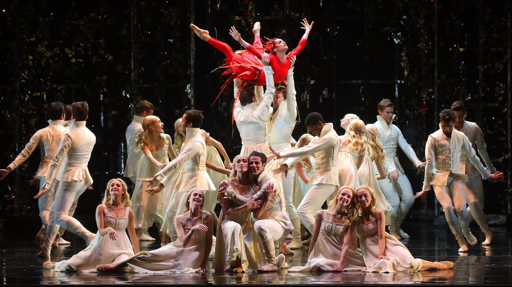

library(dplyr)
library(lubridate)
library(purrr)
library(gt)
library(ggplot2)
library(plotly)This post composes a short data set of 13 ballets, and then creates a table with clickale links, and an interactive graph with plotly.

0. Introduction
Ballet has been a popular form of dance and culture since the fifteen hundreds1. It has changed and evolved a lot since then, but for this analysis I thought it would be fun to investigate some of the most popular ballets.
I will use the following packages:
dplyrto manipulate the data.lubridateto convert the date character in a date variable.purrto use map function for links.gtto make the table.ggplot2to make the graph.plotlyto make the graph interactive.
To build this data from scratch, I started with 13 different popular ballets.
Ballet <- c("Swan Lake",
"The Nutcracker",
"Giselle",
"Romeo and Juliet",
"Don Quixote",
"Cinderella ",
"La Bayadere",
"Coppelia",
"The Sleeping Beauty ",
"La Sylphide ",
"Spartacus",
"Alice's Adventures in Wonder Land",
"Firebird")Using Wikipedia I am including:
- Composers
Composer <- c("Pyotr Ilyich Tchaikovsky",
"Pyotr Ilyich Tchaikovsky",
"Adolph Adam",
"Sergei Prokofiev",
"Ludwig Minkus",
"Sergei Prokofiev",
"Ludwig Minkus",
"Leo Delibes",
"Pyotr Ilyich Tchaikovsky",
"Filippo Talioni",
"Leonid Yakobson",
"Joby Talbo",
"Igor Stravinsky ")- Choreographers
Note ballets with only one choreographer will show the second choreographer as blank.
choreographer_1 <- c("Julius Reisinger",
"Marius Petipa",
"Jean Coralli",
"Ivo Vana-Psota",
"Marius Petipa",
"Rosstislav Zakharov",
"Marius Petipa",
"Arthur Saint-Leon",
"Marius Petipa",
"Jean-Madeline Schnitzhoeffer",
"Aram Khachaturian",
"Christopoher Wheeldon",
"Michel Fokine")
choreographer_2 <- c("",
"Lev Ivanov",
"Jules Perrot",
"",
"",
"",
"",
"",
"",
"",
"",
"",
"")- Number of Acts
Acts <- c(4, 2, 2, 4, 3, 3, 4, 2, 3, 2, 3, 3, 1)- Date Premiered
month_premiered <- c( 3, 12, 6, 12, 12, 11, 2, 5, 1, 3, 12, 2, 6)
day_premiered <- c( 4, 18, 28, 30, 26, 21, 11, 25, 5, 12, 27, 28, 9)
year_premiered <- c(1877, 1892, 1841, 1938, 1869, 1945, 1877, 1870, 1890, 1832, 1956, 2011, 1910)- Links to Youtube Videos of each Ballet
Links <- c("https://www.youtube.com/watch?v=LbUatYSm8ME",
"https://www.youtube.com/watch?v=tR_Z1LUDQuQ",
"https://www.youtube.com/watch?v=VroMXEDLTq8",
"https://www.youtube.com/watch?v=7AnpPu7j6Dg",
"https://www.youtube.com/watch?v=pazAS4cNi7w",
"https://www.youtube.com/watch?v=LPbKZXNfJ-Y",
"https://www.youtube.com/watch?v=zTR4Oco_0Bc",
"https://www.youtube.com/watch?v=uE2fjFMag7E",
"https://www.youtube.com/watch?v=EDFlRq5RnbQ",
"https://www.youtube.com/watch?v=R_RFxSLar2A",
"https://www.youtube.com/watch?v=Fha6rYtaLMk",
"https://www.youtube.com/watch?v=c2wWq25p5Sk",
"https://www.youtube.com/watch?v=Yo9L9H--t3k")For the ballet dataframe, ballet_df, I will use:
make_date()to make the character variables a date.arrange()to arrange the df alphabetically by Ballet.
I also did not include choreographer_2, because it only provided two data points which did not contribute a lot to this short analysis.
ballet_df <- base::data.frame(
Ballet,
Composer,
choreographer_1,
Acts,
date_premiered = lubridate::make_date(year_premiered,
month_premiered,
day_premiered)) %>%
dplyr::arrange(Ballet)1. Code
To add the hyper-linked text I used:
mutate()to overwrite exsiting variables.map()to transform the input into an object of the same length.a()to create an R object that represents an HTML hyperlink tag..xstands for the vector that is being input.html()so the HTML tag will come through as HTML when rendered.as.character()to convert the input to a character.
To create the table I used:
gt()to create the table.
ballet_table <- ballet_df %>%
dplyr::mutate(
Links = map(Links, ~ htmltools::a(href = .x, "Youtube")),
Links = map(Links, ~ gt::html(as.character(.x)))) %>%
gt::gt()To create a ggplot I used:
ggplot()to create the plot, and define the mapping.geom_point()to create a scatterplot.labs()to define the labels.ggtitleto define the title.
ballet_plot <- ballet_df %>%
ggplot2::ggplot(mapping = aes(x = date_premiered,
y = Ballet,
color = factor(Acts))) +
ggplot2::geom_point() +
ggplot2::labs(x = "Date Premiered",
y = "Ballet",
color = "Number of Acts") +
ggplot2::ggtitle("Ballets by Date Premiered")2. Visuals
| Ballet | Composer | choreographer_1 | Acts | date_premiered | Links |
|---|---|---|---|---|---|
| Alice's Adventures in Wonder Land | Joby Talbo | Christopoher Wheeldon | 3 | 2011-02-28 | Youtube |
| Cinderella | Sergei Prokofiev | Rosstislav Zakharov | 3 | 1945-11-21 | Youtube |
| Coppelia | Leo Delibes | Arthur Saint-Leon | 2 | 1870-05-25 | Youtube |
| Don Quixote | Ludwig Minkus | Marius Petipa | 3 | 1869-12-26 | Youtube |
| Firebird | Igor Stravinsky | Michel Fokine | 1 | 1910-06-09 | Youtube |
| Giselle | Adolph Adam | Jean Coralli | 2 | 1841-06-28 | Youtube |
| La Bayadere | Ludwig Minkus | Marius Petipa | 4 | 1877-02-11 | Youtube |
| La Sylphide | Filippo Talioni | Jean-Madeline Schnitzhoeffer | 2 | 1832-03-12 | Youtube |
| Romeo and Juliet | Sergei Prokofiev | Ivo Vana-Psota | 4 | 1938-12-30 | Youtube |
| Spartacus | Leonid Yakobson | Aram Khachaturian | 3 | 1956-12-27 | Youtube |
| Swan Lake | Pyotr Ilyich Tchaikovsky | Julius Reisinger | 4 | 1877-03-04 | Youtube |
| The Nutcracker | Pyotr Ilyich Tchaikovsky | Marius Petipa | 2 | 1892-12-18 | Youtube |
| The Sleeping Beauty | Pyotr Ilyich Tchaikovsky | Marius Petipa | 3 | 1890-01-05 | Youtube |